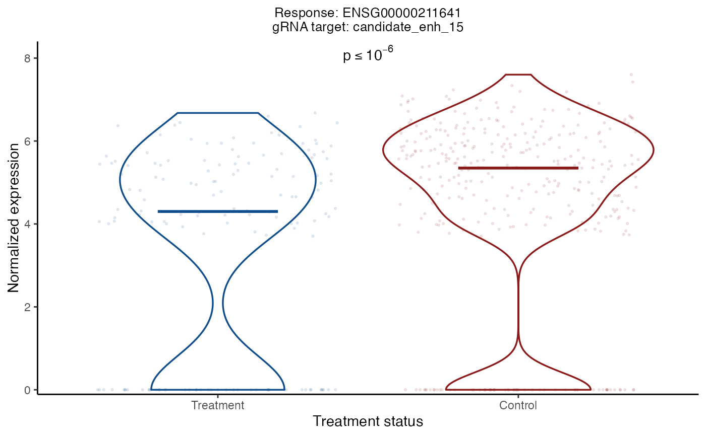

plot_response_grna_target_pair() creates a violin plot of the expression
level of a given response as a function of the "treatment status" (i.e.,
treatment or control) of a given gRNA target. The left (resp., right) violin
plot shows the expression level of the response in treatment (resp., control)
cells. The expression level is normalized by dividing by n_response_umis,
adding a pseudo-count of 1 and then taking the log transform. If the given
response-gRNA-target pair has been analyzed, the p-value for the test of
association also is displayed.
Arguments
- sceptre_object
a
sceptre_objectthat has hadrun_qc()called on it- response_id
a string containing a response ID
- grna_target
a string containing a gRNA target (or, if
grna_integration_strategyis set to"singleton", an individual gRNA ID)
Details
If grna_integration_strategy is set to "singleton", then grna_target
should be set to a gRNA ID.
Examples
data(highmoi_example_data)
data(grna_target_data_frame_highmoi)
# import data
sceptre_object <- import_data(
response_matrix = highmoi_example_data$response_matrix,
grna_matrix = highmoi_example_data$grna_matrix,
grna_target_data_frame = grna_target_data_frame_highmoi,
moi = "high",
extra_covariates = highmoi_example_data$extra_covariates,
response_names = highmoi_example_data$gene_names
)
discovery_pairs <- construct_cis_pairs(sceptre_object)
sceptre_object |>
set_analysis_parameters(
side = "left",
discovery_pairs = discovery_pairs,
resampling_mechanism = "permutations",
) |>
assign_grnas(method = "thresholding") |>
run_qc() |>
run_discovery_analysis() |>
plot_response_grna_target_pair(
response_id = "ENSG00000211641",
grna_target = "candidate_enh_15"
)
#> Note: If you are on a Mac laptop or desktop, consider setting `parallel = TRUE` to improve speed. Otherwise, keep `parallel = FALSE`.
#> The calibration check (`run_calibration_check()`) should be run before the discovery analysis.
#> Generating permutation resamples.
#> ✓
#> Analyzing pairs containing response ENSG00000100218 (1 of 85)
#> Analyzing pairs containing response ENSG00000099958 (5 of 85)
#> Analyzing pairs containing response ENSG00000211638 (10 of 85)
#> Analyzing pairs containing response ENSG00000274422 (15 of 85)
#> Analyzing pairs containing response ENSG00000133475 (20 of 85)
#> Analyzing pairs containing response ENSG00000236003 (25 of 85)
#> Analyzing pairs containing response ENSG00000211661 (30 of 85)
#> Analyzing pairs containing response ENSG00000225783 (35 of 85)
#> Analyzing pairs containing response ENSG00000169548 (40 of 85)
#> Analyzing pairs containing response ENSG00000253631 (45 of 85)
#> Analyzing pairs containing response ENSG00000286941 (50 of 85)
#> Analyzing pairs containing response ENSG00000286365 (55 of 85)
#> Analyzing pairs containing response ENSG00000100325 (60 of 85)
#> Analyzing pairs containing response ENSG00000099956 (65 of 85)
#> Analyzing pairs containing response ENSG00000100276 (70 of 85)
#> Analyzing pairs containing response ENSG00000234630 (75 of 85)
#> Analyzing pairs containing response ENSG00000253963 (80 of 85)
#> Analyzing pairs containing response ENSG00000100027 (85 of 85)
